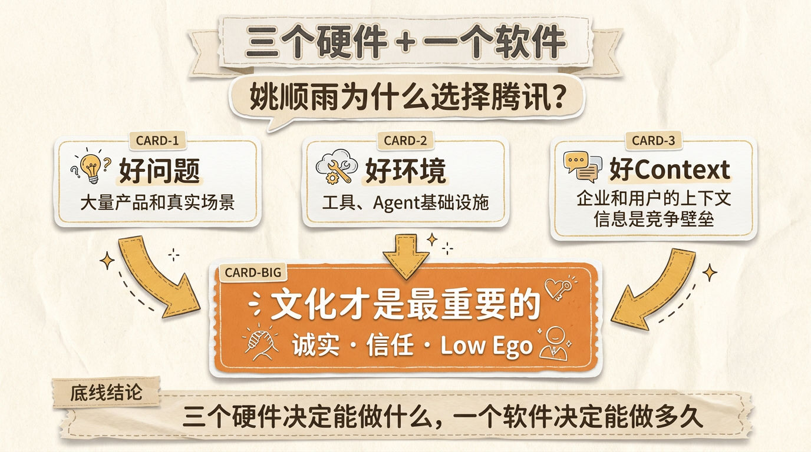
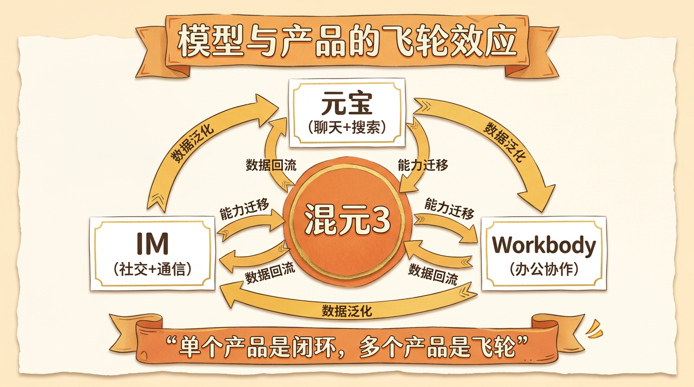

姚顺雨首秀腾讯：混元3没什么秘密，但有一个比算法更重要的东西
2026腾讯云AI产业应用大会，现场爆满。
整个会场放眼望去全是人。不是那种礼貌性的座无虚席，而是过道都站满了人的那种爆满。因为所有人都知道，今天有个重量级人物要公开讲话了——姚顺雨，腾讯首席AI科学家，ReAct论文的作者，去年那篇引发行业大讨论的”AI下半场”博客的提出者。
他要和腾讯集团高级执行副总裁、云与智慧产业事业群CEO汤道生做一场深度对谈。主题只有一个：腾讯AI的下半场，到底怎么打。
当然，所有人心里都揣着同一个问题：腾讯AI，慢了吗？
姚顺雨的答案，比你想的要深得多。
AI下半场，到底是什么
先说清楚一个概念。
“AI下半场”这个词，最近被用得有点泛滥。但它确实是姚顺雨去年在一篇博客里提出的，原始含义很具体：
方法论已经成熟了，找问题反而变难了。
什么意思？姚顺雨举了个例子。过去做AI，你为下围棋发明一个AlphaGo，它只能下棋；你为翻译训练一个模型，它只能翻译。每个问题需要一套专门的方法。
但预训练和后训练的出现改变了一切——我们突然有了一把”万能的锤子”，可以去砸任何钉子。方法论变成通用的了。
反而是”寻找好的问题来解决”，变成了更稀缺的能力。
基于这个判断，姚顺雨做了两个核心预测：
第一个：AI是长期游戏，不是短期游戏。 硅谷蔓延着一种情绪——所有人都要失业了，AI要取代一切，赶紧赚两年钱然后退休。但姚顺雨的判断是：下半场才刚开始。今天可能就像70年代PC刚出现的时候，还有源源不断的新机会。
第二个：AI会更多元，不是更单一。 过去几年，pre-training、post-training、RL、agent、coding agent——所有人都在做一样的事。但未来会打开：coding agent只是开始，多模态、具身智能，还有很多新事情正在或刚刚发生。
这两个判断决定了腾讯的节奏：不追短期的速度，追长期的准确。
腾讯慢了吗——诚实面对自己
“慢了吗”这个问题，姚顺雨没有回避。
他的回答很有意思。他没有说”我们其实不慢”，也没有拿数据反驳。他做的事情更本质——他把问题重新定义了。
如果AI是一个短期游戏，那确实，先发的优势巨大，晚一步就是输了。但如果这是一个长期游戏，下半场才刚开始，那”慢”这个字本身就需要重新理解。
更让我印象深刻的，是他选择腾讯的原因。
他选择腾讯的原因，有三个”硬件”和一个”软件”。
三个硬件：好问题（腾讯有大量产品和真实场景）、好环境（没有工具agent就做不了事）、好context（企业和个人的上下文信息，恰恰是竞争壁垒）。
但最重要的是那个”软件”——文化。
他第一次跟腾讯总办老板们聊天时的印象：**”非常诚实。”** 哪里做得好、哪里做得不好，都讲得直白，不会掩盖。知道哪里该怎么做，也承认哪里不知道该怎么做。
第二，腾讯是基于trust（信任）而不是基于metrics（指标）运转的公司。第三，文化里有非常low ego、甚至”骚气”的一面。这三个文化特质，对一个长期做AI的组织来说，可能比任何算力都重要。
汤道生的回应也很实在：”大家对腾讯经常喜欢挑某一个点来批评，我们也欢迎大家提更高的要求。有些地方可能做得快了，有些地方做得慢了，有些地方在探索中失败。但这毕竟是一场长跑。”
一句话：下半场最重要的不是跑多快，而是能不能诚实地面对自己。

混元3的秘密：苦活和taste
混元3被很多人视为姚顺雨加入腾讯后的”首秀”。他怎么做的？
“没什么秘密。”
这句话他说得很坦然。做大模型是一件比较”苦”的事情，主要做了三件事：
第一，重建Infrastructure。 预训练和强化学习的底层设施都做了重建。不性感，但必须做。
第二，数据和评估的大改。 如何定义更真实的问题、如何丰富数据的分类法、如何提高数据质量——这是永无止境的追求。
第三，taste-driven的决策。 这可能是最有意思的一点。姚顺雨说，很多决策没有清晰的公式——怎么招人、怎么设节奏，每天都有很多decision要考虑很多tradeoff。这些决策更像是审美品味驱动的事情。
“taste-driven”这个判断很值得玩味。当所有人都在讨论scaling law、数据配比的时候，他强调的是做决策的”品味”。好品味从哪来？从对问题的深刻理解来，从跟产品团队的深度协作来，从一次次试错中来。
但混元3的推进过程中，最打动我的不是技术细节，而是一个”信任先行”的故事：
当时腾讯自己的预训练还没ready，但后训练团队已经很强了。姚顺雨做了一个很多人不理解的决定——派后训练最强的骨干力量，先去帮元宝把基于DeepSeek的后训练做好。
很多算法同学不理解：为什么要把最精锐的力量拿去支持别人的产品？
姚顺雨的解释是：维护好元宝的DAU，看上去是产品目标，但对做好模型本身同样重要。
后来的结果证明了这个策略。这个动作让产品方意识到，做模型的同学是真的在为产品着想。这为混元3在元宝上成功上线，打下了最重要的信任基础。
技术可以用算力堆，信任只能用行动建。
模型与产品的互相成就
混元3的故事引出了一个更大的话题：模型和产品到底该怎么协作？
姚顺雨和汤道生的共识是co-design。但co-design说起来容易，做起来极难。
核心矛盾在于：做模型和做产品的目标，天然不一样。 做模型的人希望能力越强越好，做产品的人希望用户需求满足得越好。两个方向有很多重合，但也有很多冲突。
汤道生从产品侧的体感也印证了这一点：做产品 alignment 的时候，产品要针对某个方向解决问题，模型到底怎么满足这个需求？同时模型需要数据，数据应该怎么标、标到什么颗粒度，什么是好的标注、什么是不好的——这些开放式问题，如果没有对齐，做出来的东西就会不一致，产品行为甚至会变得随机。
姚顺雨说了一句很关键的话：**”最重要的一点是要建立信任，而且同理心很重要。要有换位思考的能力。”**
那产品的真实数据，到底能给模型带来什么？姚顺雨总结了三个价值：
1. 发现底线问题。 benchmark上的题目往往非常精确、有很长的问题描述、一般是单轮问题。但真实世界里，大众问的问题通常很模糊，可能就一两句话，然后不停追问。这些差异会暴露出榜单里完全发现不了的底线问题。
2. 理解真实的prompt分布。 benchmark上的问题是精心设计的，真实用户的提问方式完全不同。这种对真实场景的理解，能启发模型怎么做更好的训练。
3. 获得新灵感。 甚至可以从产品使用中发现全新的方向——比如元宝的使用数据就给coding能力的工作带来了启发。
更宏观地看，腾讯还有一个独特优势：多产品体系的网络效应。 混元3让元宝产生强大的聊天和搜索能力，这种能力可以迁移到IM或Workbody等其他产品；而这些产品又提供不同的数据，数据之间相互泛化，形成像网络一样的体系。
单个产品是一个闭环，多个产品就是一个飞轮。

下一代押注：coding agent之外
关于下一代模型的研发方向，姚顺雨的判断很明确：coding agent是基础能力，不得不做。
为什么coding这么本质？他的解释很有意思：**”它有点像图灵完备——当你能控制自己的file system、有一个container的时候，你其实就是一个complete的system。”**
coding agent是每一家模型发力的重点，但腾讯的做法有三个差异：
第一，强调体系的全面化。 即使coding是最重要的事，也远不止coding的数据。还需要聊天、指令遵循、推理等各种能力——因为大模型最重要的一点是泛化性。只堆coding数据，路会越走越窄。
第二，产品数据回流。 如何利用好线上的数据回流，是每个模型厂商都在思考的问题。前面说的co-design经验，在这里会变得非常重要。
第三，保留想象力。 无论技术演进、产品演进，还是下一个范式的演进，都需要做一些探索性的、甚至带不确定性的工作。
关于”性价比”这个热门话题，姚顺雨的拆解也值得玩味：
性价比拆开是两件事——先看性能，再看成本。
他提到一个反直觉的观察：很多人最后发现，用最好的模型反而更省钱——因为更快就把事情做对了，也省了人的精力。性能才是性价比最关键的部分。
而在成本层面，他提出了一个更有颠覆性的观点：**”怎么用一个更小的模型，把更高价值的任务做好。”** 如果一个小模型能在大部分任务上比肩大模型的性能，那它在今天的中国市场，可能远比大模型在长程任务上的边际改进更有价值。
把这几个判断放在一起看，姚顺雨的性价比哲学其实很清晰：
- 性能第一，成本第二。 性能不好，性价比就无从谈起。
- 简单任务一次做对，比复杂任务做到极致更重要。 这才是大多数人每天面对的真实需求。
- 小模型做大事，才是真正的杠杆。 如果一个小模型能比肩大模型的性能，它带来的价值可能远大于大模型在长程任务上的边际改进。
- 架构创新、长文本管理、压缩都在做，但最终目标不是更便宜的大模型，而是更强的小模型。
这些判断不是凭空来的——姚顺雨七年前就看到了这个方向。
从ReAct到今天——七年后的回望
2019年，姚顺雨的博士论文题目叫《Language Agent: from next token prediction to digital automation》。
那是GPT-2的时代。模型吐出的一段话还不太连续，有很多毛刺。人们很难想象它有一天会成为改变世界的力量。
当时稍微有点想象力的研究，比如输入”中国的首都”，模型回答”北京”——能做到这点大家就已经很开心了。
但姚顺雨当时的想象力比较狂野：他觉得GPT是一个极其优美的东西，”吐出下一个token”是一件极简又极其通用的事。它有一天的潜力不仅在于吐出下一个token，而在于把世界上所有的事情全部自动化。
2022年7月的某个晚上，他第一次把当时的语言模型API和自己手写的一个Wikipedia API接在一起。模型第一次能基于网页回答问题，并且做多轮交互。
那一刻，用他的话说，”就像微弱的灯丝突然亮起来”。
据他所知，这可能是人类第一次把LLM和真正的互联网连在一起，并做多轮交互。他当时就觉得：这件事可能在五年或十年内会改变世界。后来发生得比他想的还要快。
他博士论文结尾写了四个future work：为智能体训练模型、安全且稳健的部署、科学发现、帮助人类。
七年后的今天，他说：”我现在很幸运，确实在做当时列的这些future direction。”
然后他加了一句：”可能想得还是不够大。”
写在最后
姚顺雨对腾讯AI的定位，是一个三角形：foundation（基础模型）、产品（真实价值）、frontier（前沿探索）。 三者均衡，才能在中国建立一个长期的、基于AGI的组织。
回到最初的问题：腾讯AI慢了吗？
如果你用”谁先发模型、谁先刷榜单”的标准来衡量，那确实不算快。但如果换一个视角——下半场才刚开始，最重要的不是跑多快，而是能不能诚实地面对自己、能不能建立信任、能不能做出正确的选择——那腾讯的节奏，或许恰恰是对的时候。
毕竟，姚顺雨七年前就看到了今天的方向，然后说”想得还是不够大”。
这样的人，你很难说他慢。
如果觉得有收获，随手点个赞、在看、转发三连吧~给我个星标⭐，下次不迷路。